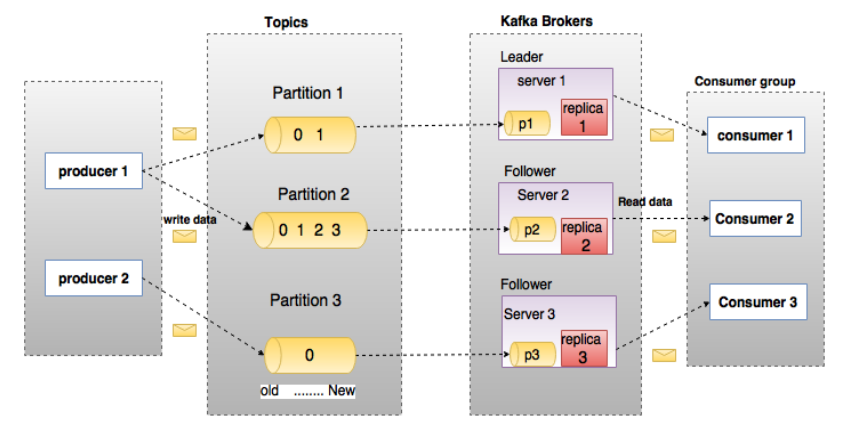

应该选择怎样的通信机制来进行服务间通讯和外部客户端通讯？(风格)
微服务之间通信
远程过程调用（Remote Procedure Invocation）
使用基于远程过程调用(Remote Procedure Invocation, RPI)的服务间通讯方式。
远程过程调用是集成领域的先驱，是在计算早期实现API的首选方法。在这种方法中，提供者将允许外部进程向封闭的应用程序发出请求。外部调用者具有发出请求的规范，以及对响应的期望，但是所有逻辑都是使用黑盒方法进行的。
在现代软件中，RPI可以用多种方法实现，典型的实现方法有RESTful API。例如，用RESTful API封装一个加法接口/add，规定RPI请求的格式为GETa=和b=，那么外部的服务就可以按照/add?a=100&b=200格式调用这个加法API了。
典型的RPI框架：
- RESTful API（严格来说不是框架是协议）
- gRPC（RPC是远程过程调用的另一种写法 Remote Procedure Call）
- Apache Thrift（RPI框架）
消息（Messaging）
使用异步消息进行服务间通讯。
典型框架有消息队列服务Apache Kafka和RabbitMQ
消息系统
一个消息系统负责将数据从一个应用传递到另外一个应用，应用只需关注于数据，无需关注数据在两个或多个应用间是如何传递的。分布式消息传递基于可靠的消息队列，在客户端应用和消息系统之间异步传递消息。有两种主要的消息传递模式：点对点传递模式、发布-订阅模式。大部分的消息系统选用发布-订阅模式。
点对点消息传递模式
在点对点消息系统中，消息持久化到一个队列中。此时，将有一个或多个消费者消费队列中的数据。但是一条消息只能被消费一次。当一个消费者消费了队列中的某条数据之后，该条数据则从消息队列中删除。该模式即使有多个消费者同时消费数据，也能保证数据处理的顺序。

发布-订阅消息传递模式
在发布-订阅消息系统中，消息被持久化到一个topic中。与点对点消息系统不同的是，消费者可以订阅一个或多个topic，消费者可以消费该topic中所有的数据，同一条数据可以被多个消费者消费，数据被消费后不会立马删除。在发布-订阅消息系统中，消息的生产者称为发布者，消费者称为订阅者。

Apache Kafka
Kafka是Apache下的一个子项目，是一个高性能跨语言分布式发布/订阅消息队列系统，而Jafka是在Kafka之上孵化而来的，即Kafka的一个升级版。具有以下特性：快速持久化，可以在O(1)的系统开销下进行消息持久化；高吞吐，在一台普通的服务器上既可以达到10W/s的吞吐速率；完全的分布式系统，Broker、Producer、Consumer都原生自动支持分布式，自动实现负载均衡；支持Hadoop数据并行加载，对于像Hadoop的一样的日志数据和离线分析系统，但又要求实时处理的限制，这是一个可行的解决方案。Kafka通过Hadoop的并行加载机制统一了在线和离线的消息处理。Apache Kafka相对于ActiveMQ是一个非常轻量级的消息系统，除了性能非常好之外，还是一个工作良好的分布式系统。
逻辑结构
- Broker：Kafka 集群包含一个或多个服务器，服务器节点称为broker。
- Topic：每条发布到Kafka集群的消息都有一个类别，这个类别被称为Topic。（物理上不同Topic的消息分开存储，逻辑上一个Topic的消息虽然保存于一个或多个broker上，但用户只需指定消息的Topic即可生产或消费数据而不必关心数据存于何处）
- Producer：生产者即数据的发布者，该角色将消息发布到Kafka的topic中。broker接收到生产者发送的消息后，broker将该消息追加到当前用于追加数据的segment文件中
- Consumer：消费者可以从broker中读取数据。消费者可以消费多个topic中的数据
- Consumer Group：每个Consumer属于一个特定的Consumer Group（可为每个Consumer指定group name，若不指定group name则属于默认的group）。
实现结构
- Partition：topic中的数据分割为一个或多个partition。每个topic至少有一个partition。每个partition中的数据使用多个segment文件存储。partition中的数据是有序的，不同partition间的数据丢失了数据的顺序。如果topic有多个partition，消费数据时就不能保证数据的顺序。在需要严格保证消息的消费顺序的场景下，需要将partition数目设为1。
- Leader：每个partition有多个副本，其中有且仅有一个作为Leader，Leader是当前负责数据的读写的partition。
- Follower：Follower跟随Leader，所有写请求都通过Leader路由，数据变更会广播给所有Follower，Follower与Leader保持数据同步。如果Leader失效，则从Follower中选举出一个新的Leader。当Follower与Leader挂掉、卡住或者同步太慢，leader会把这个follower从“in sync replicas”（ISR）列表中删除，重新创建一个Follower。
broker存储topic的数据。如果某topic有N个partition，集群有N个broker，那么每个broker存储该topic的一个partition。
如果某topic有N个partition，集群有(N+M)个broker，那么其中有N个broker存储该topic的一个partition，剩下的M个broker不存储该topic的partition数据。
如果某topic有N个partition，集群中broker数目少于N个，那么一个broker存储该topic的一个或多个partition。在实际生产环境中，尽量避免这种情况的发生，这种情况容易导致Kafka集群数据不均衡。

上图中一个topic配置了3个partition。Partition1有两个offset：0和1。Partition2有4个offset。Partition3有1个offset。副本的id和副本所在的机器的id恰好相同。
如果一个topic的副本数为3，那么Kafka将在集群中为每个partition创建3个相同的副本。集群中的每个broker存储一个或多个partition。多个producer和consumer可同时生产和消费数据。
RabbitMQ
RabbitMQ是使用Erlang编写的一个开源的消息队列，本身支持很多的协议：AMQP，XMPP, SMTP, STOMP，也正因如此，它非常重量级，更适合于企业级的开发。同时实现了Broker构架，这意味着消息在发送给客户端时先在中心队列排队。对路由，负载均衡或者数据持久化都有很好的支持。
Redis
没错你可以把Redis当消息队列用。实验表明：入队时，当数据比较小时Redis的性能要高于RabbitMQ，而如果数据大小超过了10K，Redis则慢的无法忍受；出队时，无论数据大小，Redis都表现出非常好的性能，而RabbitMQ的出队性能则远低于Redis。
ZeroMQ
ZeroMQ号称最快的消息队列系统，尤其针对大吞吐量的需求场景。ZeroMQ能够实现RabbitMQ不擅长的高级/复杂的队列，但是开发人员需要自己组合多种技术框架，技术上的复杂度是对这MQ能够应用成功的挑战。ZeroMQ具有一个独特的非中间件的模式，你不需要安装和运行一个消息服务器或中间件，因为你的应用程序将扮演这个服务器角色。你只需要简单的引用ZeroMQ程序库，可以使用NuGet安装，然后你就可以愉快的在应用程序之间发送消息了。但是ZeroMQ仅提供非持久性的队列，也就是说如果宕机，数据将会丢失。其中，Twitter的Storm 0.9.0以前的版本中默认使用ZeroMQ作为数据流的传输（Storm从0.9版本开始同时支持ZeroMQ和Netty作为传输模块）。
ActiveMQ
ActiveMQ是Apache下的一个子项目。 类似于ZeroMQ，它能够以代理人和点对点的技术实现队列。同时类似于RabbitMQ，它少量代码就可以高效地实现高级应用场景。
领域独用协议（Domain-specific protocol）
使用特定领域的通讯协议（如 SIP，等）。例如：
- Email服务用Email协议SMTP和IMAP
- 媒体服务用流媒体协议RTMP、HLS、HDS
微服务与外部通信
如何处理外部客户端与服务之间的通讯？(外部 API)
例如，在一个使用微服务模式的在线商店中，产品详情数据会分布在多项服务之间，比如产品信息服务、定价服务、订单服务、库存服务、评论服务等。因此，客户端显示产品详情的代码需要从这些服务中获取信息。
需求：
- 微服务提供的API粒度通常与客户端需要的有所不同。微服务通常提供的是细粒度API，这意味着客户端需要同多项服务进行交互。举例来说，如之前所提到的，客户端需要从多项服务处获取数据方可获得产品详情。
- 不同客户端需要不同的数据。举例来说，有产品详情页面的桌面浏览器版本通常较移动版复杂。
- 不同客户端的网络性能亦有所区别。举例来说，移动网络通常较非移动网络速度更慢且更延迟。当然，广域网速度也必然低于局域网。这意味着原生移动客户端所使用的网络在性能上与服务器端Web应用采用的局域网完全不同。服务器端Web应用能够向后端服务发送多条请求，而且不会影响到用户体验，但移动客户端则只能发送少量请求。
- 服务实例数量与其位置（主机与端口）会发生动态变化。
- 服务的划分方式会随时间的推移而改变，且不应被客户端所感知。
API 网关（API gateway）
两种方案：
- 为每一类客户端提供一个访问服务的独特接口，为各客户端提供最符合其需求的API
- 使用 API 网关作为全部客户端的单一入口点。部分请求会被直接代理/路由至对应的服务，另一部分请求则需要接入多项服务。

优点：
- 向客户端隐藏了服务器结构，确保客户端无法察觉应用程序是如何被拆分为多项微服务的，且使客户端不受服务实例的位置的影响。
- 为每套客户端提供最优API。
- 降低请求/往返次数。举例来说，API网关能够确保客户端在单次往返中就从多项服务中检索出数据。请求数量更少意味着运行负担更低且用户体验更好。API网关对于移动应用而言是必不可少的。
- 将从客户端调用多项服务的逻辑转换为从API网关处调用，从而简化整个客户端。
缺点：
- 复杂性高：API网关是另外一种需要开发、部署与管理的活动部件。
- API网关会造成多余的网络跳转，从而增加响应时间（不过对于大多数应用程序而言，一次多余的往返并不会造成什么影响）。
如何实现？如果需要不断扩展以处理高负载量，那么事件驱动型/响应型方案是最理想的选择。在JVM上，Netty、Spring Reactor等基于NIO的库大有用处。Node.JS也是一个可行的选项。